| 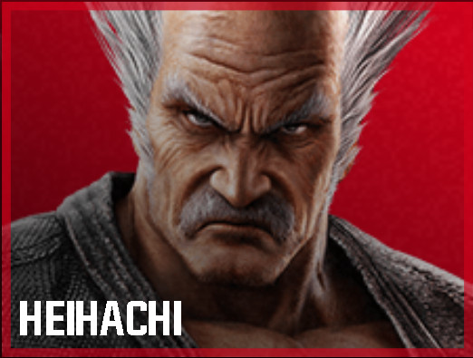 | YOU FOOL! I AM INVINCIBLE!The original leader of the Mishima Zaibatsu, and the fighter known as the "King of the Iron Fist."Heihachi continues to fight for control of the Mishima Zaibatsu against his son, Kazuya, and his grandson, Jin. |
| 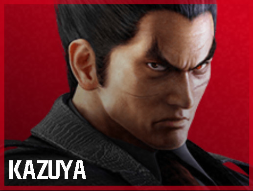 | IT'S TIME FOR YOU TO MEET YOUR END!Kazuya was raised as the heir to the Mishima Zaibatsu, but rebelled against his father Heihachi. After awakening the power of the devil within him, he's finally able to control it. |
| 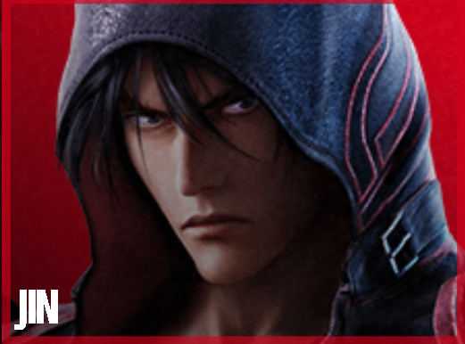 | POWER IS EVERYTHINGThe leader of the Mishima Zaibatsu and the man who declared war on the world. Fighting the Devil inside him which gets stronger everyday, he yearns to be rid of it once and for all. When his battle is over at last, will he find hope… or despair? |
| 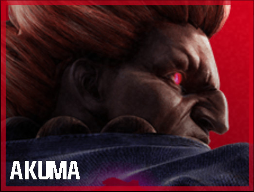 | CAN YOU WITHSTAND MY POWER?A mysterious fighter… a demon. He finds himself in the middle of the Mishima blood feud by a pre-existing relationship with Kazumi, Hehiachi's wife. He makes his debut in TEKKEN 7 promising to fulfill a debt owed to Kazumi. |
LET'S DO THISKing is not only a masked professional wrestler, but also the proud owner of an orphanage. Recently, King's sworn friend and comrade, Craig Marduk, as well as the man King called his master, both engaged in a bloody fight which left them with critical injuries. | |
| 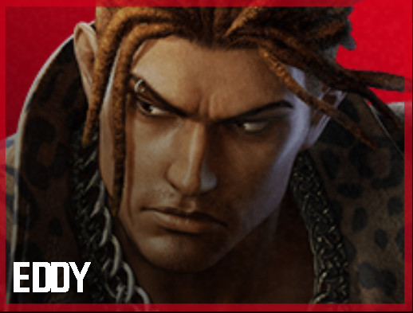 | DON'T THINK I'LL GO EASY ON YOU.Eddy Gordo went to G Corporation to exact revenge on Kazuya Mishima for murdering his father. After he'd taken out a crowd of guards, a young girl in a strange outfit stood before him, and struck a pose. "You're not getting past me, old man! Teehee!" |
| 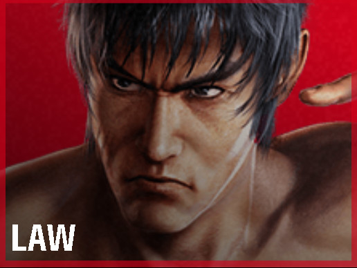 | THERE'S GOTTA BE SOME WAY I CAN MAKE SOME MONEY OFF THIS!Preoccupied with paying off his son's debts, Marshall Law didn't realize how many of his students had quit his dojo until it was almost too late. With a large sum still to repay, Law was running out of ideas. As a last resort, he decided to search for a capable fighter to run the dojo. |
| 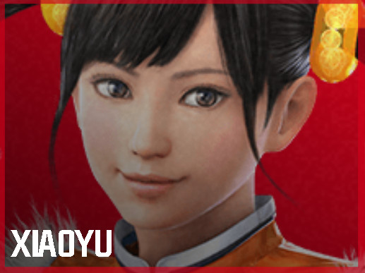 | I'M GOING TO STOP JIN!Ling Xiaoyu infiltrated the Mishima Zaibatsu building in search of information relating to Jin Kazama's disappearance. Creeping deeper into the enemy territory under the guards' noses, she eventually hears Heihachi Mishima's voice coming from a room; he was giving orders about locating Jin. Just as Xiaoyu was about to sneak into the room, a man dressed all in white emerged and pushed her back. "Take me to Jin!" Xiaoyu demanded, unflinching. The man stood there for a moment, before ordering Xiaoyu to follow him. |
| 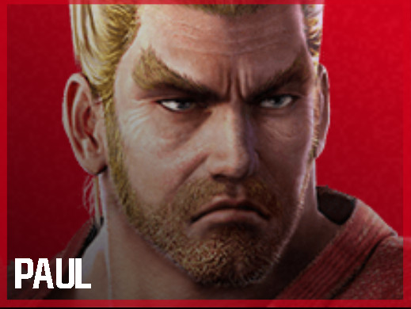 | I'LL SHOW YOU THE POWER OF THE STRONGEST IN THE UNIVERSE… BUT NOT FOR FREE!When Paul Phoenix, the golden boy of the martial arts world, steps into the ring, the excitement in the crowd is palpable. But this time when his opponent's name rang over the arena's loudspeakers, he could only scratch his head in disbelief. It was Kuma... again! |
| 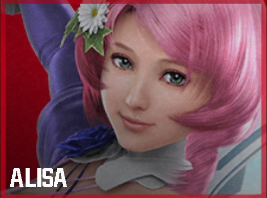 | I AM ALISA, NICE TO MEET YOUAn android created by Dr. Bosconovitch as a bodyguard for Jin Kazama. Her design itself is modeled after Bosconovitch's own lost daughter. Her fighting capabilities are extremely high. She can perform attacks with high mobility using arm-mounted missiles and thrusters. |
| 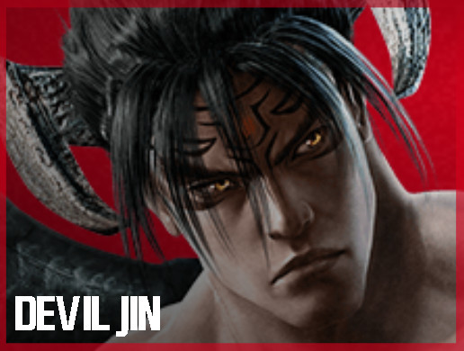 | FEAR MY WRATHAfter he defeated Azazel, Jin Kazama was apprehended by UN troops. As his unconscious body was being transported by helicopter, he became possessed by his devil form, ripped free from his straitjacket, tore through the helicopter's fuselage with a powerful beam attack, and then escaped. |
| 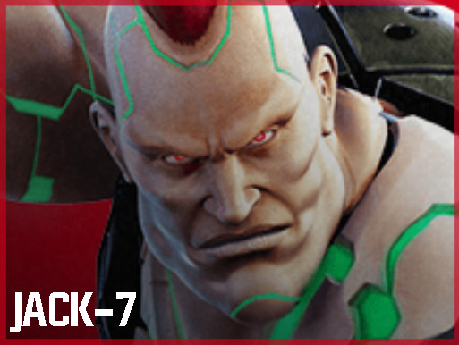 | AWAITING COMMANDSIt was no secret that G Corporation was locked in a power struggle with the Mishima Zaibatsu. However, within G Corp itself, another battle was raging: the battle to create the ultimate next-gen humanoid weapon. |
| 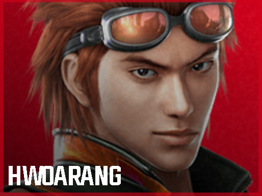 | COME AT ME! I'LL TAKE YOU DOWNHwoarang sees one man as his rival: Jin Kazama. Jin, CEO of the Mishima Zaibatsu, declared war against the world, and in the ensuing turmoil vanished suddenly, without a trace. Suspecting there is more to Jin's disappearance than meets the eye, Hwoarang vowed to track him down. |
| 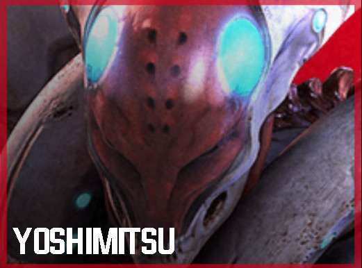 | I AM PEERLESSWith Heihachi reinstated as the CEO of the Mishima Zaibatsu, Yoshimitsu sensed something bad was afoot, and so entered the King of Iron Fist Tournament as way of confirming his suspicions. |
| 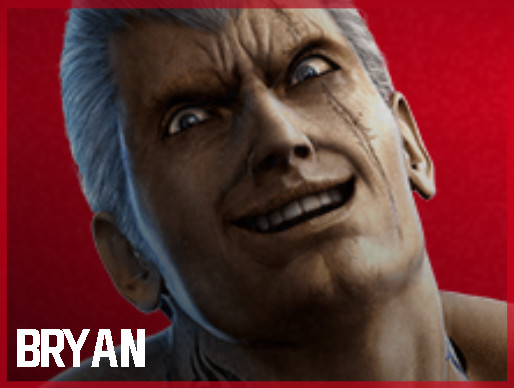 | MWAHAHAHAHA! SO, WHICH ONE OF YOU WANTS TO DIE?A savage fighter who uses a kickboxing fighting style. He's reported to have died twice and was somehow revived each time. He once belonged to an international police force, but Dr. Abel and Dr. Bosconovitch made him a replicant with a perpetual generator that keeps him alive. |
| 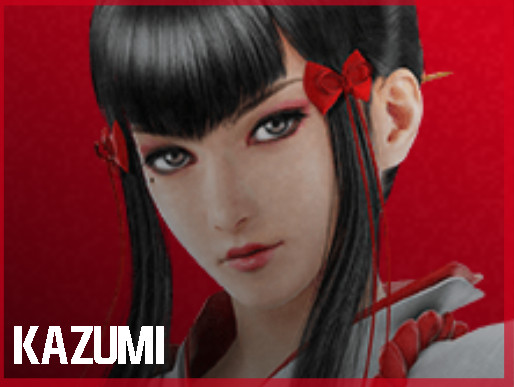 | I WILL TEACH YOU THE MEANING OF FEAR.Kazumi Mishima, wife of Heihachi Mishima, is well versed in Hachijyo Karate. She was childhood friends with her husband Heihachi and eventually they fell in love. Through their love they birthed a healthy young boy. Fast forward a few years later, Heihachi would become the head of a huge organization called the Mishima Zaibatsu, with plans to conquer the world. |
| 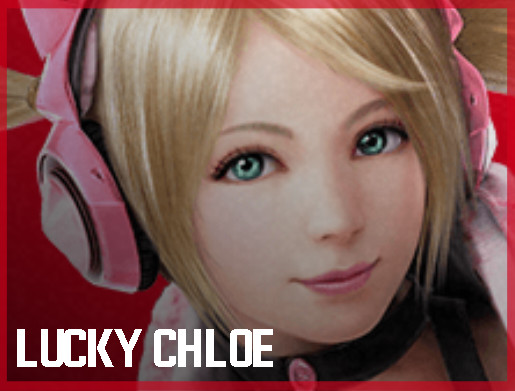 | ARE YOU READY?Lucky Chloe is a pop sensation, and the face of the G Corporation brand. When a mysterious man burst into G Corp and took out guard after guard with dance-like techniques, Lucky Chloe fearlessly walked right up to him and blocked his path. |
| 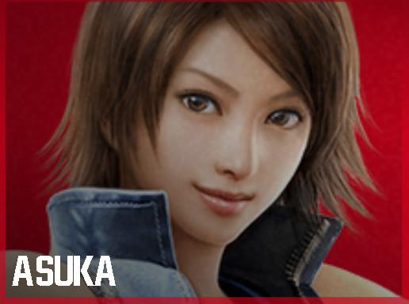 | WHEN YOU RESORT TO FIGHTING, EVERYONE LOSESDaughter of the Kazama Traditional Martial Arts School and known as "Gang Mediator" in her hometown. Ever since she involved herself in a certain street fight, Lili has viewed her as a rival. She knows that Jin Kazama is her cousin and vows to take him down. |
| 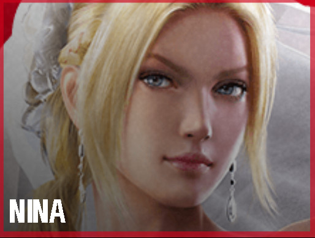 | YOU'VE GOT A DATE WITH DEATHAfter failing to apprehend Jin Kazama, Nina Williams decided it was time for her and the Mishima Zaibatsu to go their separate ways. On her first private assassination job, she was tasked with infiltrating a mafia wedding... posing as the bride! |
| 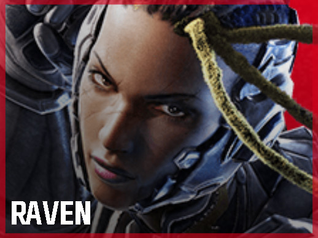 | IT'S JUST BUSINESS. DON'T TAKE IT PERSONALLY.As an agent for the UN's intelligence bureau, Master Raven embarked on her latest top-secret mission: Infiltrate the King of Iron Fist Tournament and confront her assigned target. |
Available for Purchase Now On | ||
| 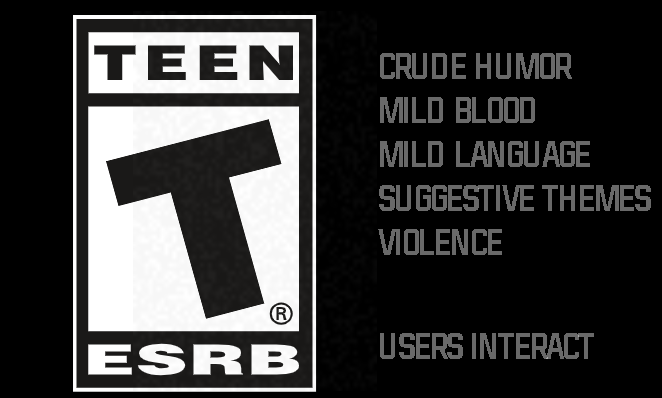 | 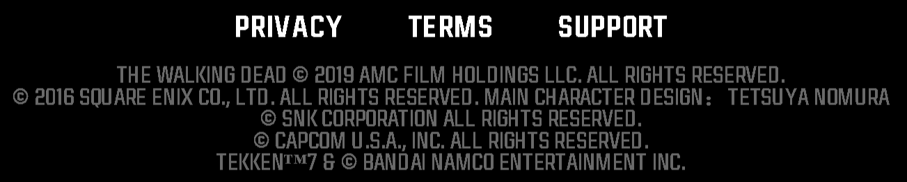 | |